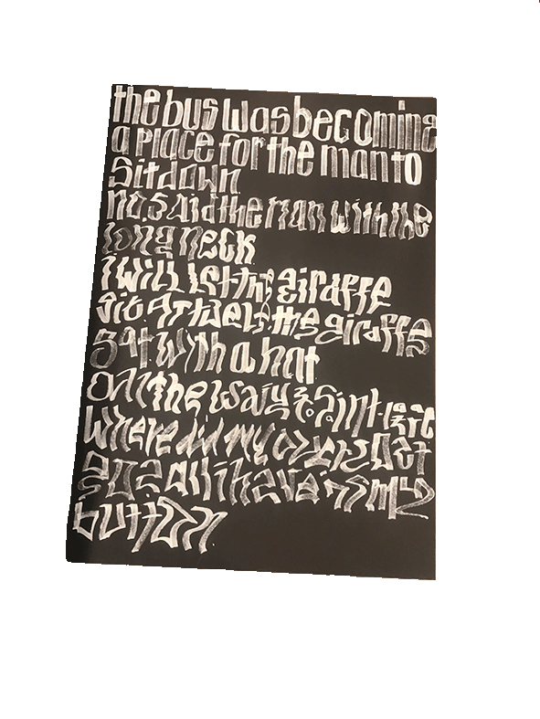
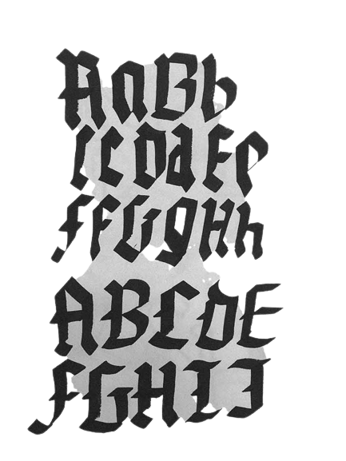
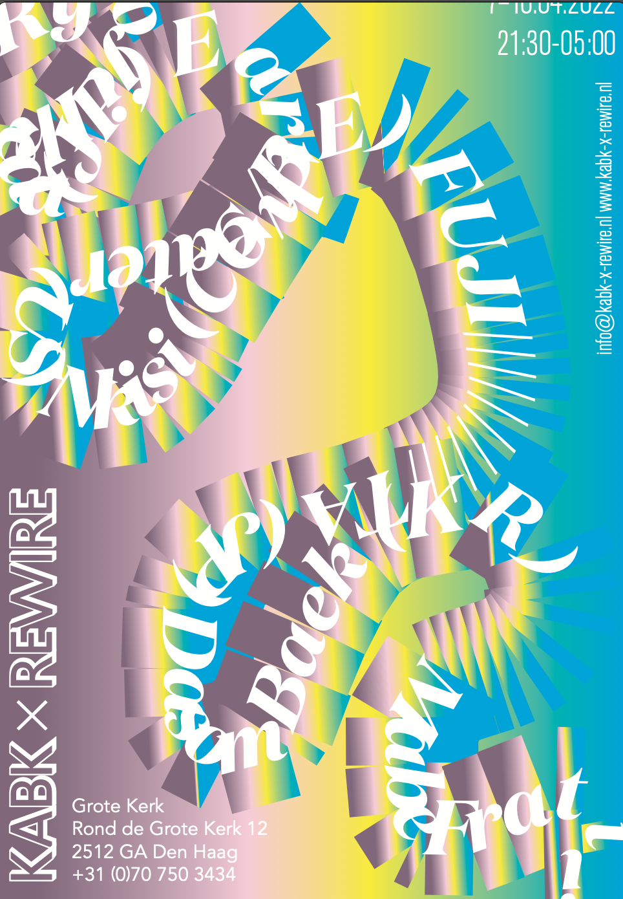

In this chapter, JWS places artists' positions plus corresponding facets of artisthood in line with an exploration of artists' studios. In my own words and experiences, I will walk you through the perspective of a student's position in this school from year 1 to year 3.
The first year is an adventurous exploration of your qualities in
various aspects of graphic design. These qualities are explored with
challenging assignments that appeal to the student’s curiosity and
creativity. Considerable emphasis is placed on open-mindedness and the joy
of working. You will try out different ways of working and acquire an
initial indication of your visual abilities and the value of your ideas.
You will gradually move towards the development of your own visual
language and visions. In the first year, it is important to create a large
body of work that provides confidence and creates resilience that will be
useful during the rest of the programme. In the final assessment, you must
answer the question of whether graphic design is suitable for you, and if
you are suitable for the profession. You should be able to specify clearly
the elements of the profession that are of primary interest to you.


In Type Design you will get classes from Guido de Boer. Guido
is a master at drawing letters and creating art through calligraphy. etc
etc. This was my feedback from him for this class: You’re telling me that
you’re comparing yourself in the beginning of the block with others and
that made you insecure. That will always make you feel that way since
there’s always somebody ‘better’. It’s not the point. The shift to a more
confident feeling started when you found your fun. This is where the
studying starts. We talked about the brush vs. the pen. That’s a nice
symbol with having control and not. Try to explore this field of not
knowing, not having control. Since that’s where you will surprise
yourself! Your mindset changed after we talked about the difference
between drawing and writing. You started being interested in the unknown
instead of being ‘afraid’ of being in the dark. You started talking with
others and that actually what I like about your function and attitude in
class. You’re great to have around, be aware of that great skill you’re
having. Give space for your own ideas and bring them to life!
Typography

In Typography, you will learn the rules of placing text. Rob van den Nieuwenhuizen, the teacher, will introduce you to all kinds definitions around th "building blocks" of letters. He specifically described Typography as "Typography are the bricks of letters that you have to build and Type design is the process that follows". Our course started with some of Rob's warm words on Teams:
I would like all of you to prepare a few small things before our first class on Monday.
ONE
Choose and bring a physical (and mostly) typographic work (i.e. a book, poster, zine, shirt, object, sticker, packaging, etc.) that was either made by you or by someone else and that you feel represents you.
TWO
Also choose and bring a physical (and mostly) typographic work that represents something that you would like to learn in the (huge) context of art and design. Maybe it’s based on all of the feedback that you have gotten during the three previous blocks, maybe it’s something you always wanted to learn, maybe it’s something you come up with during this weekend.
Basically, we’ll all introduce ourselves and our goals through someone else’s work.
THREE
Please bring scissors / knives, glue, paper tape, pencils/pens, markers, a ruler, any kind of tool that you can use to write or cut something, a few sheets of black and/or colour paper, and your laptops.
Our class will start at 09:00 in PC214. Really looking forward to seeing all of you!
Rob
This was a fun way to start the class and I remember that I brought a Toney's Chocolonely bar because of the packaging. My final feedback for Rob's class the following:
At the start of this block you brought a The New Yorker tote bag and Tony Chocolonely packaging, but especially talked about how you love writing and editing and that you would like to integrate that into your work.
During the Individual Assessments it was great to see that, in a way, even the flyers seemed to talk to each other and to the other projects that you showed for both Typography and Design class. I do think that your work would benefit from some more visual exploration, to broaden that range but to also kind of ‘train’ the tools that you use to eventually tell stories. Maybe experimenting with different scales or even techniques would inform your work differently, just as familiarizing yourself with different artists who work at the intersection of language and visual arts will. Some recommendations: Kenneth Goldsmith (Uncreative Writing), Ryan Gander (Loose Associations), Daniel Eatock, John Baldesarri, Lawrence Weiner, Jenny Holzer, Ed Ruscha, Hamish Fulton, The Guerrilla Girls, Martin Creed, Bob & Roberta Smith, Tracey Emin, Christopher Wool, and more.
Your focus on writing was of course most apparent in the publication. The decision to sort-of bring the cardboard figures in Playtime! to life and to turn them into actual characters with a backstory, was poetic and smart at the same time. The process of writing is very much a design process, and you can feel that in how the object becomes part of the story because of the materials that you choose, because of the binding, size, and so many more elements.
The typography itself, however, often stays a bit at the visual surface. I’m not trying to imply that it should be more illustrative or visually outspoken, but it seems like it’s just the carrier of your story. Could the textual writing and the visual writing be more connected? Could the writing be more integrated in your visual output so that the two become completely intertwined? Could you see all visual decisions as part of that story; not just as visual captions or sort-of illustrations to it but as actual words, sentences, and even commas? I think that is something that would strengthen your work even more and make it richer, visually.
Thank you so much for your great energy in class and for all the hard work! It’s much appreciated
Have a great Summer and a wonderful second year!
Design
Design was a class with Lu, in which I learned a lot about design and myself. I remember a video we had to make, that I made about a day in the life during corona - reconstructed. It was interesting because I didn't know it was even possible to work with film in my Graphic Design studies. But I liked that from this moment on, I knew that anything can be possible. This was my feedback from the teacher for this semester: Dear Kimi,
You are such a happy one, and you can bring that positive energy to the class and your surroundings. Even when you are stuck with the project or make something silly, you are able to laugh at it and use your positivity to find a way out. Also when you don’t understand something, you wouldn’t shy off, but check in with everyone around you to find an answer. All of these are very healthy ways of working.
For the last project, you went off sideways. It is important to be able to find your own entry point in every project, show your own voice. But when that happens, always check if you are still on track. Always come back to check your starting point, and the message you want to bring.
Practically, there is still a lot you need to learn, skills you need to gain. Try out more workshops. Also, learn to make those connections between classes and projects. Borden your frame of reference, art, film, exhibitions, traveling all the kinds of things!
Have a lot of fun in the coming semester, I look forward to your future development!
Image
In Design, Michiel Schuurman was an absolute legend regarding shapes and color theory. He tought our class the differences between RBG and CNYK and why one would be better than the other for example. I personally learned so much around Bitmap in Photoshop and composition. In our first few classes we had to cut out colored papers and paste them on another one based on our intuition. He pointed out these choices via a presentation. In a good way, this was my first acquaintance with a "direct comparison" towards me and my classmates' work. I remember how eager I was to really get into that presentation, and luckily I did - once or twice.. this was my feedback for that class: You did great this block Kimi. You showed off a solid range of techniques and working methods and you can look back upon a portfolio that offers a wide variety.
BLACK AND WHITE
The black and white part of collage classes were your favourite. You learned a lot during this period. You tried out your hand in all the basic techniques and aspects like (dynamic) compositions, contrast, texture, structure, rhythm etc. I think you done well getting acquainted and mastering some of them.
COLOUR
I agree with you that the colour part of the block was too short (or late depending on how you look at it). I’m sorry you couldn’t work it out to your full potential but I’m sure you picked up enough to go ahead.
MILESTONES
I think that your RISO project deserves some attention on it’s own. You made a children’s book from a to z. Not only the writing and drawing but also the fairly complex colour layering. It showed the range of your capabilities. I liked how you planned out everything. Making sure to print out all the correct layers in time. It was the most complex RISO project in class and you completed it with flair. It’s too bad that there wasn’t a moment where I could offer help or critique but that was part of the deal I guess. It’s hard to offer a printing workshop and critical reflection at the same time.
FUTURE
You shared some of your ambitions with me. You want to learn editing. You want to collaborate with writers and help visualise ideas. Creating magazines and more. You are getting interested in interaction and moving images as well. You even mentioned an interest in prop design. I think that you’ll get plenty of occasions to flex your muscles in that regard. `As long as you take the initiative. This school has a lot to offer but you have to step up too to make it all happen.
I think it’s also interesting that you mentioned the desire to work in a team. You wondered what your position could be in such a team. School is a great place to try out all these different positions and tasks.
I think you start learn to share these desires with your teachers though. We need to know you want to do these things in order to help you better. This is really something you should put some thought in for the coming blocks. Let us know how we can help you better.
I wish you all the best for the coming blocks and years. It was a pleasure having you in class.
Regards,
Michiel
Interactive Media Design
Interactive Media Design really shows you the things you never knew you needed, but can absolutely help you in the future. We were taught Unity, a programm that enables virtual world-making. What I liked about this technique was that it was a lot about storytelling. Our task was to create a world in which you could walk - basically a "walkthrough". I implemented sound and different objects to show that every section of my walkthrough was a different world. I made an illusion-themed video in which I filmed parts of Madurodam, and later edited this as though the illusion world was interacting with the real world. This was my feedback for Jakob's class, IMD: Kimi, this block was going well for you in IMD. When you started working on your multidimensional walk for example, I appreciated your direct and practical questions. There was a constant progress and you were able to really own this project. It felt that each week there was progress that step for step turned into a playful composition of little stories. Here, the sounds were a great tool for you. At times the visual language can be more nuanced - possibly you can try to approach the details in your work as means to communicate rather than having them as atmospheric entourage. With your illusion I liked the way that you turned the presentation into an experience. This is a great step, and opens up a whole world of considerations how this kind of experience can be curated and elevated. Never be afraid to make the presentation part of your project, and challenge the way that an assignment can be interpreted. I wish you all the best and good luck!
3D and Moving Image
For this class with Kevin Debray, I didn't have any expectations at all. And to be quite honest, looking back it was my least favorite class because I think there was not much to pick up from it. I'm honestly not sure why, but I just can't think of much from this class. This was my feedback from the teacher: Good student, good energy which is important for the cohesion of the class. It feels like you are helping everyone to find their place in the class by being open and transparent about the problematics of the class and what you expect from the course.
In your work I can see that one of the biggest aspects that needs attention is to learn when to stop or/and when to continue and to be honest the best is to do more and then to reduce and go back until you won’t need to go so far to feel like it is enough.
What I would advice you also is to start to give more importance to details and to go more in depth with your research.
For instance, I liked the way you have been pushing your experimentation with a software as simple as facetime. In this case you are pushing the limits of what is possible with this application and you force it to be a creative tool which gives surprising results.
Don’t hesitate to look for the borders of possibilities and to go too far. I see in your work a lot of reduction still but what can happen if you are going towards the opposite of that.
It was a pleasure to have you as a student. Your energy and your interest is really communicative. Looking back, this feedback helps me quite a lot when I look back. Perhaps that is what I take back from this class now years later, not per se the class but how I learn from myself through my teacher's words.
coding
Okay, I am aware that what you read now has been coded by myself - but I really was not very good at it and still will not become a coder. This is because it's difficult for me to understand the language and become quickly impatient. I learned in my first year, with teacher Aron, that it's all about trying out. We went straight into the dark and learned to code with Javascript - I can say this class was not a success for me.. This was Aron's feedback for me: In this block it was clear that coding was very new to you, but that you learned a lot from our short time together. I saw that you tried a lot to get things to work, and you produced some good assignments early in the block, but it seemed JavaScript was a real difficulty for you! It was fantastic that you were open to seeking help and that you made the effort to attend every class to make the most of the lessons. You made a very nice presentation at the individuals, with deep and thoughtful self-reflections so I was impressed! It was also great to see documentation of your work-in-progress, with some designs and patterns that I had not seen before.
I think it would be great if you continued to code some smaller projects in the following blocks just to get a little more practice – all it takes is a little more time to get used to the ideas and I think you will do well! Overall, I am happy with your progress, well done.
theory
I remember that this class with Marjan was quite enjoyable and I learned so much.. I missed some "academic" learning - in which you dive into literature and create discussions amongst your classmates. I remember the project I made about the elections in Germany back in 2022. I basically said how nothing really changes with these elections and created a work that said "vier Jahre das Gleiche / Four years the same" You are interested and engaged, and you like theory and writing. It can be very helpful to use writing as an instrument to reflect and to order your thoughts. Please try out the possibilities that can work for you. You have a good study attitude: you are organized and take care of time management and deadlines well. You compared the two books of Dave Eggers and you explained why you think The Circle is a more interesting book for a graphic design student. In the Art Trip Writing assignment you didn't focus on just one work, but mixed both artworks in your research and reflection. That is a bit confusing, and causes somewhat a lack of depth. It is a pity that you can't recall your discussion questions, and maybe you didn't apply them consciously. You seriously worked on the Postmodernism-Now assignment but unfortunately you didn't answer the question regarding the contemporary situation. I think that reading the written assignments in advance more carefully is very important for you, that will gave you more clarity and better outcomes. Keep reading and visiting exhibitions and lectures, to expand your frame of reference!
Year 2
In the second year of the graphic design program, students engage in a series of design projects aimed at deepening their understanding of the profession and enhancing their skills as designers. Students tackle assignments that span the spectrum from practical to conceptual, with both mandatory and optional tasks. Throughout the year, students receive guidance from various tutors who specialize in distinct areas of expertise: Design, Image, Typography, or Interaction Design. In addition, students have the chance to select from courses like Letterstudio, Design Research, Moving Image, or Design Practice, allowing them to tailor their education to their interests. Furthermore, students create their own Individual Study Trajectories, enabling them to pursue specific design directions.
Graphic Design
Graphic Design with Alex Clay, possibly my favorite class of all. The teacher and assignment made me feel taken seriously in this class and I knew what I wanted to bring to the table quite well. The assignment was to exchange with your classmate some project proposals that the other would design. I had LYP; Library for Youth Politics in Romania inspired by Ana - my romanian friend. His feedback for me: Dear Kimi,
You have a very positive attitude and take an active position in class. This inspires other students. Your entire process is quite intuitive. Be mindful of when that is a good approach, and when it is better to be rational. When analyzing your assignment and drawing conclusions, try to be as precise as possible. This will give you a clear framework to explore within; then you can let your creativity flow freely but with direction.
Your ambitions with the project were high, and you explored possibilities beyond expectations. Your holistic approach to the identity (also designing the library space) is strong, and something to develop further. But also allow yourself to focus on a small segment and dig deep into that. You can for instance improve your storytelling by developing your editorial design skills. Make a lot of mileage working with typography and composition to make it a natural way of expressing yourself. This will allow you to create even more distinguished and personal projects.
coding
For this coding class with Pascal, we had to create a Database and a website about ourselves. I enjoyed this process of the website as I delved into research about what can be found in the grachten of The Netherlands: This was my feedback for this class: You’ve used the first (not-a-portfolio) assignment to polish up and expand your knowledge of HTML and CSS, creating an ode to Jonah’s smile. You’ve had a lot of fun creating a cartoon version of Jonah and turning his traced smile into an animation. The scripting part was still a bit hard for you to integrate into this project though. Extra added value was the fact that Jonah got to read his ode during your presentation.
For your second project, ‘What’s in your gracht?’, you dived into the Canals of Amsterdam, Utrecht, Leiden and Delft. You got inspired by videos of canals from the inside, instead of the view from the outside in. You’ve created your own dataset filled with findings in the canals, using this to display them as markers on your own custom-made maps.
I think it would be good if you would improve your markers a little, by showing them without the white bounding boxes, and perhaps in color, so they stand out a bit more. You can also show a more information about the markers in the popup after you click it.
I’m very happy with all the progress you’ve booked this semester. It was very nice to see you work on your dataset with great persistence as well as diving in the world of online map making and integrating all of this in your website. Well done!
Electives
Electives are classes which you can choose yourselves. There is Letterstudio, Design Practice, Design Research and Moving Image. In this year I had Moving Image and Design Practice. The first elective, Moving Image, taught me a lot about creating film in various forms. For example in After Effects or working with archival footage to create a new work. This was the first class that I wasn't sure I would pass, as my teammate and I were given an orange color (given when a student doesn't show just enough of what the teacher expects, but can be improved in the collectives). This was the feedback: Your sense of speed and editing works well. I also see how you really explored After Effects. Your installation used simple, almost clumsy material, but you managed to create a beautiful organic and sculptural installation with it. You also seem to be well organized and good in working together harmoniously.
I do have some concerns about the amount of conceptual development that I’ve seen throughout the semester, and how you translate your critical thoughts into storytelling techniques. You tweaked your initial idea along the way, but you didn’t go deeper into questions about what it means that the information overload that you represent in your found footage comes from a specific (Western) part of the world, and a specific time (the 20th century), and that you actually want to address that the dominant Western exploitative and capitalist structures, have led to the destructive overconsumption today. It is actually unclear what future you propose as a result of that. There is a blurriness between reflecting on overconsumption and what this does to the world, and reflection on an overload/overstimulation of information and what this does to an individual. What do you want to communicate?
I think your opportunity for growth lies in taking bigger steps in the process. Don’t be afraid to throw things overboard, to simplify, to boil down what you started with. Be specific about what you are trying to convey and from which perspective. Because you clearly have feelings, reflections and critique when you talk about the work. This communication skill is something you will need to develop further as a design student. I also had Design Practice that year, which was a great larning-curve-sibject. You will get taught mainly about being a real-life Graphic Designer in which you work and communicate with clients with a team of your classmates. This is what my teachers said following the assessments: Dear Kim, this semester you have been working on the Haagse Wijngaard project, and with a group you made a campaign for Student Night of Filmhuis.
Finally, you had a humorous idea for the wine label using cartoon figure Haagse Harry. You managed to come up with clever ideas and good sketches for this short assignment.
In the Student Night campaign project, you started a little slow, but you caught up well later on. As the project progressed you become a more and more involved member of the group and improved your presentation and sketching skills each week. After Julie left the group, you took over the contact with the Filmhuis and showed your leadership skills in managing this project. We really liked your additional ideas of the Creforive Club and the sketches you made for this. The advice we would like to give you is to sketch even more and try different design techniques to experiment with mediums and try different approaches. Sometimes you stayed a bit on the safe side with your sketches. Your engagement in the last phase of the project was pleasant to see. During the course of this semester you have been growing as a person and as a designer. Please, keep on growing aand dar eto also show your more serious side. Thank you for joining Design Practice this semester; we wish you good luck in the third year!
Typography
In Typography, it was great to work with Johanna and Elisabeth. They have a feminist approach to Design and I felt very safe and, in a way, powerful during their course. I made a textile piece called "Dear Sisters", that was based on a magazine we had to work with in this class. This is what they gave me on the way:Kimi,
Your process began in a very inspired way, where you immediately started making works of your own based on the findings in your issue. You experimented with different techniques, writing, and image making which was great to see. There’s a lot of playfulness and trial and error in your process, and for good and bad it seemed to have been difficult sometimes to know what to leave behind and what to keep. It might be an interesting experiment for you to first sketch and then stay on one track and really focus on the details of that. For your publication for instance, you tried out several layout ideas, some stronger than others. It would have been interesting to see you take one of those ideas all the way—to see what would have happened if you pushed the amazing fuzzy designs you made for the spreads “Dear Sisters” and “Smash Sexism” further and with different types of content and typography, to give an example. In your textile you did this successfully—the material and the contrast of the techniques you used bound the work together coherently, yet with wonderful details and layers of stylised type in screenprint and on-top embroidery. Best of luck in the development of your design practice—we’re looking forward to seeing where you’ll go with your work!
Interactive Media Design
In this class, we had to create a walkthrough based on our favorite series. I chose Orphan Black and presented my work in the basement. This was Hannes' feedback for participation in class: Dear Kim,
In IMD this block you researched Orphan Black, a science fiction thriller in which multiple clones coexist in a shared reality. In your first steps you sampled a range of materials from moving image, text and visual representation (of characters). It was the role of sound, however, that stood out as most captivating. Selecting audio as your primary medium quite early on led to less literal exploration, and more experimental approaches. You seem to have a grip on your design process once you target the methods and tools for making. You showed growth and innovation going from regular audio editing to AI generative tools.
The Interactive Walk assignment called for you to reimagine aspects of your selected show (narratives, themes, genre conventions, styles) as spatial translation for audience interaction. You zoomed into duplicates and synthetic doubles as a theme and explored some of the darker narratives and aesthetics of the show successfully. You work quickly, so now take time to dive deeper into underlying concepts. For example, you looked into doppelgänger mythologies: adding this external awareness into final outcomes brings context and complexity.
You were active in class and peer feedback, and frequently shared updates on your developments. You can continue to develop your critical self-reflection further by also sharing questions and doubts, exposing uncertainties in process to group discussion and handy inputs.
Your final walk was well staged and a communicative (if quite scary) translation of concepts, content and design intentions. Remember to test your final prototypes with peers. The use of AI-generated images were not self-evident to the audience, although a great addition to the work. Similarly, the table setting with monitor installation was well designed and an effective installation format. Pay attention to final editing and cut any elements that are not essential (the food props for example). Reducing in the last stage concentrates your intentional and meaningful interactions even more. Overall, you had a productive block in IMD, rich process and clear developments in your practice - keep going this way.
Theory
Theory with Els Kuijpers was an intruiging rollercoaster of information and interaction. Never have I learned as much as in this class, listening to lectures but also taking part in the questions asked or the comments made. I like how Els phrases sentences and the works she referenced in class. It was an intellectual class that I missed in the years before. This is what Els gave me on my way: Good results in all 4 parts of the theory program. Doing things with lightness – pleasurable and joyful activity - steps away from heaviness: dealing with monumental fixed ideas. It is wonderful you seem to have found a thread to pull in the ‘theory labyrinth’ to make a route for yourself - a very important experience. Now it comes to deepen this path. Make up your mind what are the things you want to use design for – build up awareness – and take these things further/your topics with focus and attention, by using the method we have trained this semester. That includes taking executing very seriously - doing is closer to design than speculative ideas are – very important since all your projects are still in a state of unfinished. Your ref.-list lists kind of sloppy - editing is needed. Your final edition of the working papers was a good try to finish, but given its pragmatic orientation I think other decisions would have been worthwhile to try out too. Design tests ideas practically; so executing/fine tuning is not a matter of styling, of make beautiful: it is what design in essence IS: constructing a ‘story ‘by meaningful aesthetic relations that structure specifically. Design relates always in any medium the what [‘what is the story’] to the how [how is the story told]. So, do not hide, do not be shy but use your tutors and peers as much as possible; communicate a bit more frequently. You can trust your nice hunches and good ideas; now it’s time to work them out utterly seriously.
Image
In Image,we had to create a public intervention. My intervention were clay houses situated in black and white photographs of old places. I thought this project was very interesting and taught me quite some things about research. Jeroen Koolhas said the following feedback to me: Fun to have you in my class! Your positive energy shines onto the other students. Your process book, almost styled like a children's book, tells the story of your creative process in a comprehensive way. It is interesting that you chose to create an intervention in the past, setting your creation in post war Germany. I understand your decision to abandon this setting because you felt you were infringing on a sensitive subject. I remember you telling me that you then googled 'world's ugliest places' and this gave you the images of Baltimore you ended up using. Thinking back I wonder if this setting is actually just as political or conflicted, given the class and racial struggles that resulted in these abandoned streets. Just a thought. It was a good move to step away from the clay houses, which felt a bit like you were designing toys. Once you started applying the brightly colored clay to black and white photographs you had somehow invented a whole new way of seeing. I would be interested to see you continue this novel direction. Your process book was well designed although heavily influenced by an early decision to weave the green snake forms through it all. I wonder what your book would have looked like if it was more influenced by your latest clay on photograph pieces.
Year 3: Work in Progress
In the third year of the graphic design program, the primary focus shifts towards exploring the dynamic relationship between graphic designers and society at large. This year offers students a heightened degree of autonomy in structuring their own supervisory experiences, granting them substantial flexibility in approaching their assignments.
For instance, students can opt to intensify their exploration of designing for emerging media platforms, concentrate on harmonising text and imagery, or delve into typographic design methods. The curriculum underscores the significance of interdisciplinary collaboration and the acquisition of multidisciplinary knowledge.
Electives
For this year, I started with Design Practice. My team and I are currently working on th National Theatre in The Hague to create wayfinding designs for a festival.
Design
In Design, we are currently designing a catalogue based on the Best Dutch Book design. I have nine books in my collection that mainly discuss and show social topics of street or documentary photography.
Coding
For coding we are supposed to translate a book from the Best Dutch Book Design collection into a website - and just under 2MB. I chose the book Plan and Play, Play and Plan.